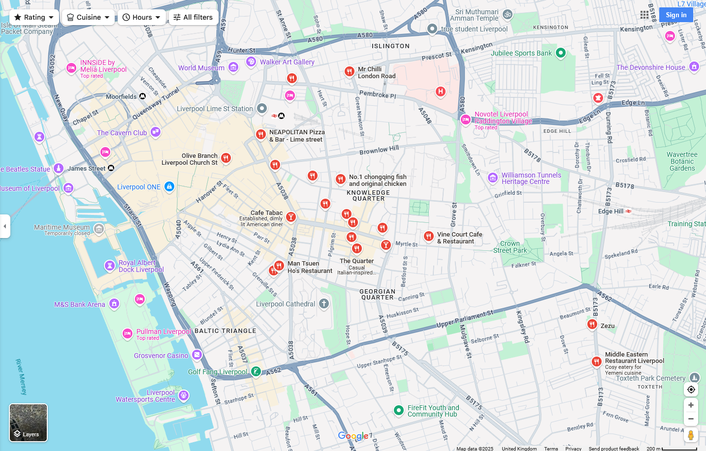
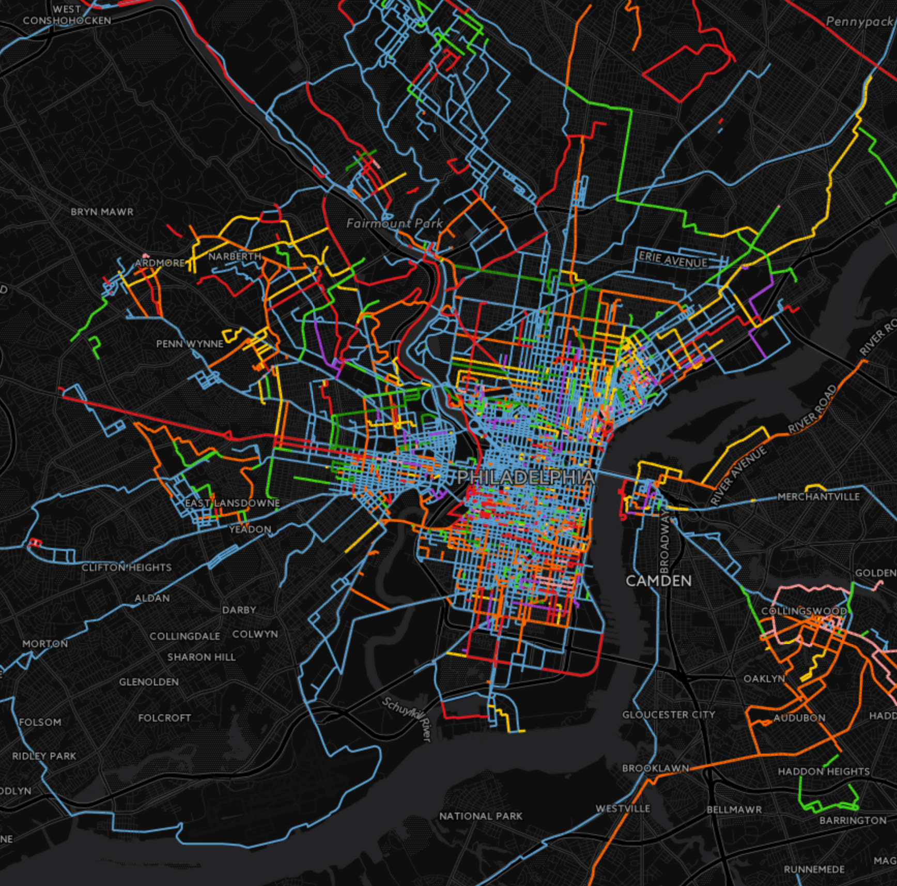
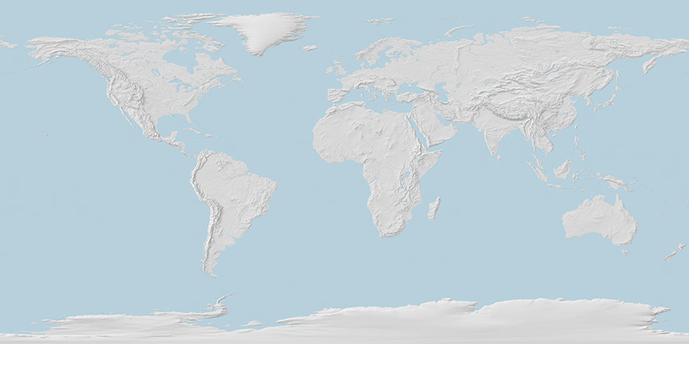
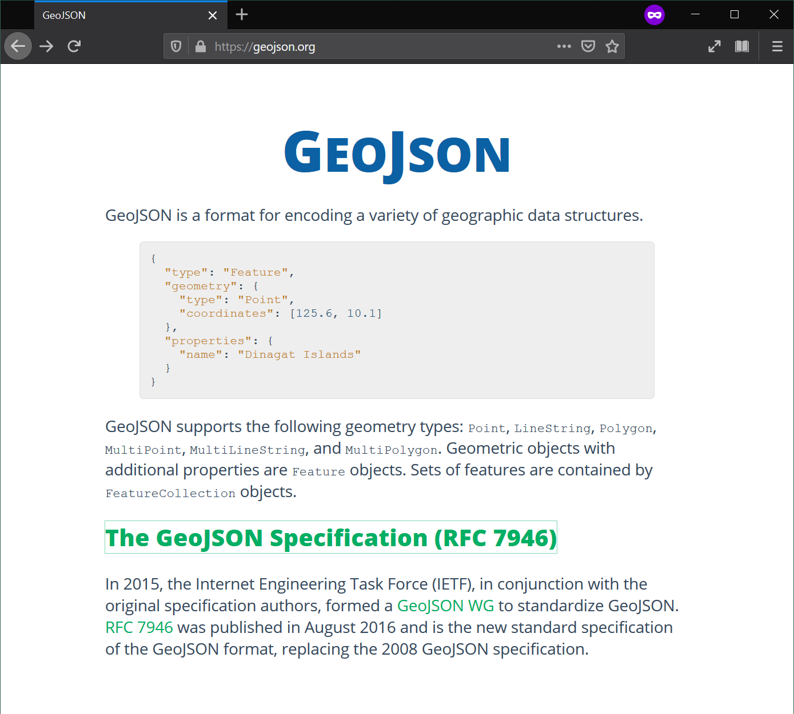
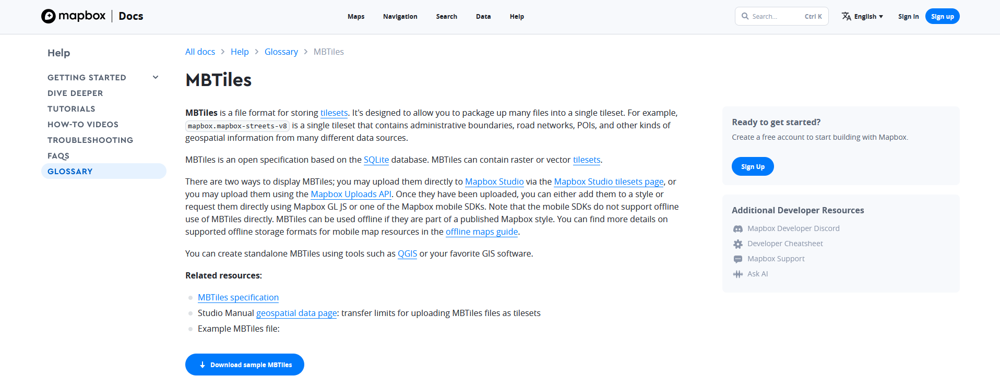
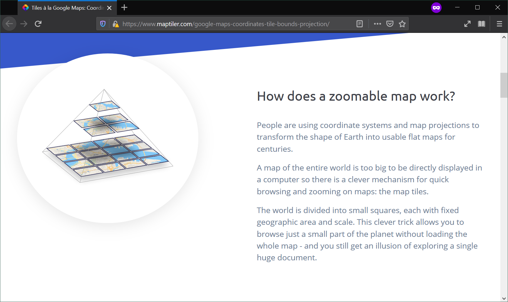
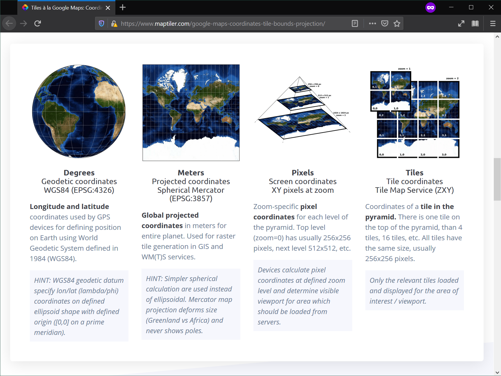
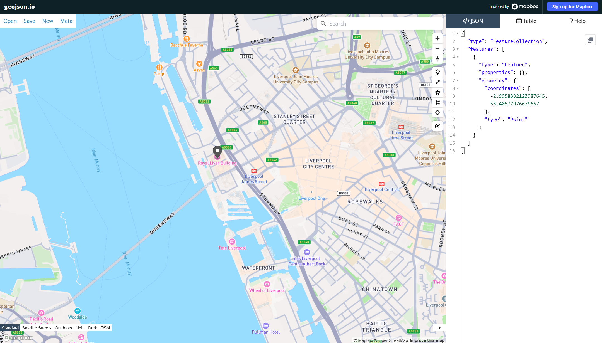
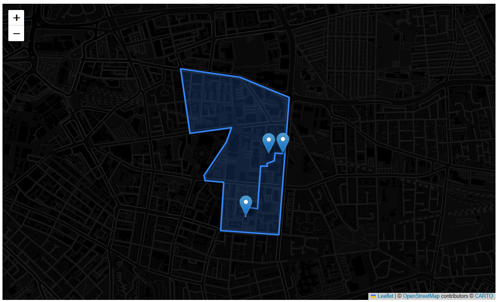
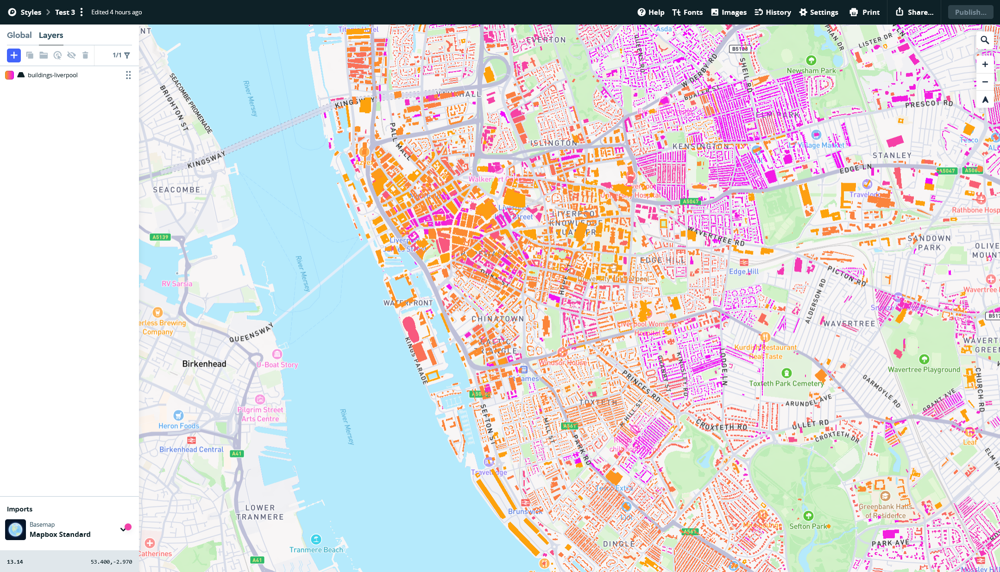

Web Mapping and Geovisualisation
Data Architecture and Formats
Today
- Spatial Data
- Spatial Data Formats (old and new)
- Selecting the right format
Spatial Data
The data we use to represent space falls into one of two categories:
- Vector
- Raster
Vector
Space is divided into a finite set of entities, each of which is represented by a shape or geometry…
- (Multi-)Points
- (Multi-)Lines
- (Multi-)Polygons
A few examples
Points

Lines

Polygons
Combinations
Raster
Use an image and control pixel colors to encode value
The value assigned for each cell represents the attribute of that cell, i.e:
- Continuous variables (temperature,elevation etc.)
- Satellite Imagery (e.g. land use/cover)
Continuous Example

Satellite Example

Spatial Data Formats
In general…
- Points, lines, polygons -> Vector Formats
- Images, surfaces -> Raster Formats
Traditional formats
Vector - Individual entity type files: shapefiles etc.
Raster - Mostly (single) image formats: GeoTIFFs etc.
However…
many of these formats were designed for an offline world, so display some (or all) of the following:
- Binary
- “Unqueriable”
- complex structures
Modern Formats
New formats have appeared aiming to “fix” those issues, but also responding to web needs:
- Streamable( e.g.
GeoJSON) - Queriable (e.g.
PostGIS/Geopackage) - Single files (e.g.
.mbtiles)
We’ll be focusing on 2 specific examples…
GeoJSON

Advantages
- Plain text (Human readable)
- Streamable
- Well intergrated with web standards (
JSON)
Disadvantages
- Plain text (inefficent)
- Non-queriable
- Vector only
Tilesets (.mbtiles)

Why do we use tiles?


Advantages
- Queriable (SQLite)
- Fast access to large maps with limited resources (client/server model + queriable format)
- Some (vector tiles) are stylable
Disadvantages
- Designed for webmap services not analysis (e.g. rasters are just images)
- A dataset needs to be stored at several zoom levels
- Once created, hard to modify (e.g. reproject)
Selecting a format
No silver bullet…
- What type of data do you want to store? Vector or raster
- What are you going to do with the file? Analysis or serving
- What environment are you working? Locally or web
Examples
- Analysing a large geotagged dataset of social media posts? ‘PostGIS/Geopackage’
- Presenting drone imagery at a workshop? ‘MBTiles’
- A small dataset of greenspace areas in a neighborhood you want to upload to the web? ‘GeoJSON’
LAB 4
GeoJSONs
Creating

Mapping

Mapbox and mbtiles
Creating .mbtiles and uploading
- Creating is optional, but if you can get it to work will greatly enhance your map.
- Upload either by the API (Again optional), or manually through the Mapbox Studio
Styles tool


Geographic Data Science by Elisabetta Pietrostefani is licensed under a Creative Commons Attribution-ShareAlike 4.0 International License.